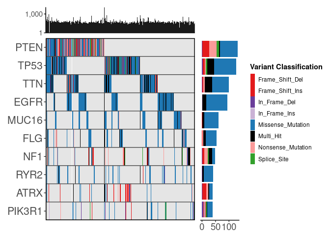
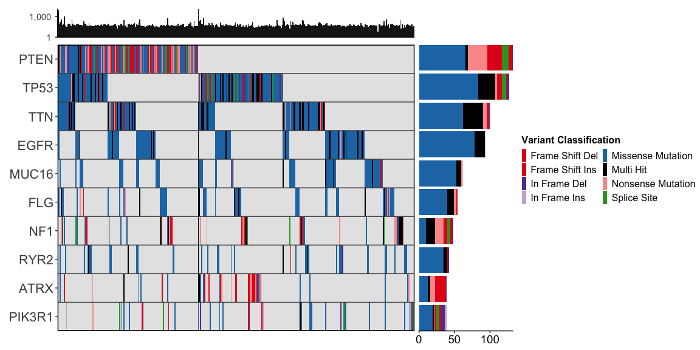
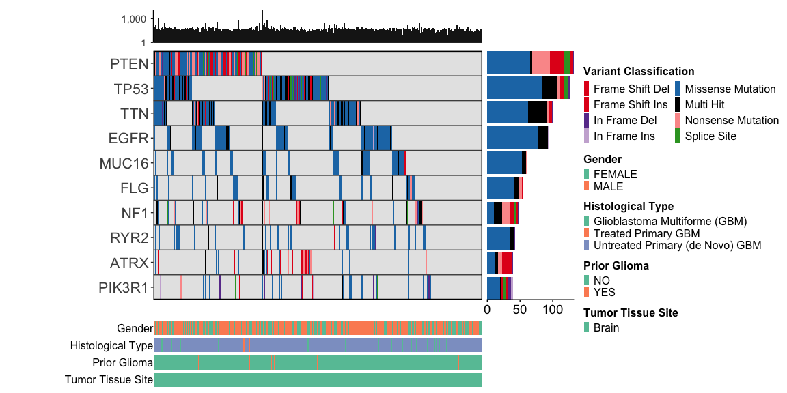

ggoncoplot creates interactive oncoplots from mutation level datasets
Installation
You can install the development version of ggoncoplot like so:
remotes::install_github('selkamand/ggoncoplot')Usage
For complete usage, see manual
Input
The input for ggoncoplot is a data.frame with 1 row per mutation in cohort and columns describing the following:
Gene Symbol
Sample Identifier
(optional) mutation type
(optional) tooltip (character string: what we show on mouse hover over a particular mutation)
These columns can be in any order, and named anything. You define the mapping of your input dataset columns to the required features in the call to ggoncoplot
Basic Example
library(ggoncoplot)
# TCGA GBM dataset from TCGAmuations package
gbm_csv <- system.file(package='ggoncoplot', "testdata/GBM_tcgamutations_mc3_maf.csv.gz")
gbm_df <- read.csv(file = gbm_csv, header=TRUE)
gbm_df |>
ggoncoplot(
col_genes = 'Hugo_Symbol',
col_samples = 'Tumor_Sample_Barcode',
col_mutation_type = 'Variant_Classification',
topn = 10,
interactive = FALSE
)
#>
#> ── Identify Class ──
#>
#> ℹ Found 7 unique mutation types in input set
#> ℹ 0/7 mutation types were valid PAVE terms
#> ℹ 0/7 mutation types were valid SO terms
#> ℹ 7/7 mutation types were valid MAF terms
#> ✔ Mutation Types are described using valid MAF terms ... using MAF palete
Add marginal plots
gbm_df |>
ggoncoplot(
col_genes = 'Hugo_Symbol',
col_samples = 'Tumor_Sample_Barcode',
col_mutation_type = 'Variant_Classification',
topn = 10,
draw_gene_barplot = TRUE,
draw_tmb_barplot = TRUE,
interactive = FALSE
)
#>
#> ── Identify Class ──
#>
#> ℹ Found 7 unique mutation types in input set
#> ℹ 0/7 mutation types were valid PAVE terms
#> ℹ 0/7 mutation types were valid SO terms
#> ℹ 7/7 mutation types were valid MAF terms
#> ✔ Mutation Types are described using valid MAF terms ... using MAF palete
#> ! TMB plot: Ignoring `col_mutation_type` since `log10_transform = TRUE`.
#> This is because you cannot accurately plot stacked bars on a logarithmic scale
Add clinical metadata
gbm_clinical_csv <- system.file(package = "ggoncoplot", "testdata/GBM_tcgamutations_mc3_clinical.csv")
gbm_clinical_df <- read.csv(file = gbm_clinical_csv, header = TRUE)
gbm_df |>
ggoncoplot(
col_genes = "Hugo_Symbol",
col_samples = "Tumor_Sample_Barcode",
col_mutation_type = "Variant_Classification",
metadata = gbm_clinical_df,
cols_to_plot_metadata = c('gender', 'histological_type', 'prior_glioma', 'tumor_tissue_site'),
draw_tmb_barplot = TRUE,
draw_gene_barplot = TRUE,
show_all_samples = TRUE,
interactive = FALSE
)
#> ℹ 2 samples with metadata have no mutations. Fitering these out
#> ℹ To keep these samples, set `metadata_require_mutations = FALSE`. To view them in the oncoplot ensure you additionally set `show_all_samples = TRUE`
#> → TCGA-06-0165-01
#> → TCGA-06-0167-01
#>
#> ── Identify Class ──
#>
#> ℹ Found 7 unique mutation types in input set
#> ℹ 0/7 mutation types were valid PAVE terms
#> ℹ 0/7 mutation types were valid SO terms
#> ℹ 7/7 mutation types were valid MAF terms
#> ✔ Mutation Types are described using valid MAF terms ... using MAF palete
#> ! TMB plot: Ignoring `col_mutation_type` since `log10_transform = TRUE`.
#> This is because you cannot accurately plot stacked bars on a logarithmic scale
Acknowledgements
We acknowledge the developers and contributors whose packages and efforts were integral to the development of ggoncoplot:
-
David Gohel for the
ggiraphpackage, which enables the interactivity of ggoncoplot. -
Thomas Lin Pedersen for his contributions to the
patchworkpackage and the maintenance ofggplot2. -
Hadley Wickham and all contributors to the
ggplot2package, which provides a robust foundation for data visualization in R.
Additionally, we thank Dr. Marion Mateos for her insightful feedback during the early stages of ggoncoplot development.